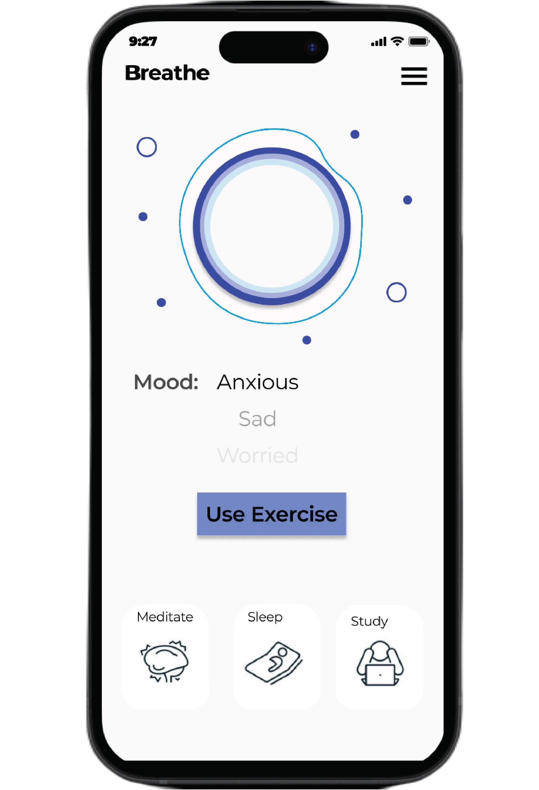
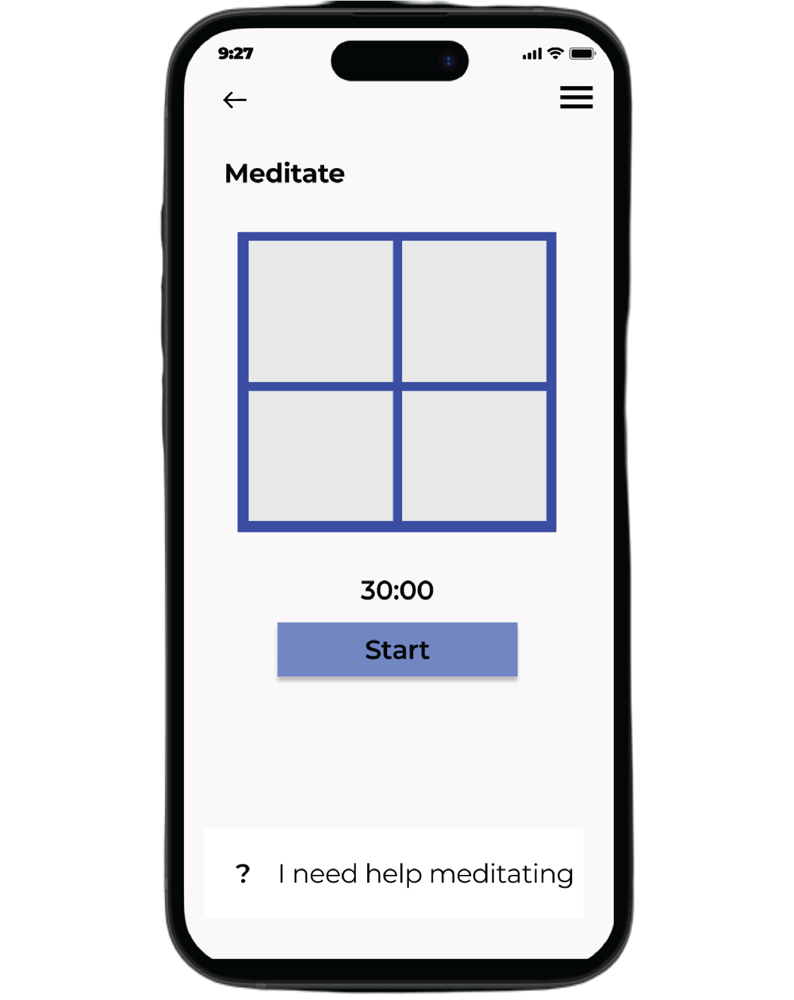

Improving College Student's Mental Health Post-Pandemic with an App

Overview:
As a group of 5 agile Designers, we created a solution to positively boost post-pandemic mental health. The solution we created received positive testimonials. The design I am displaying on my portfolio is the result of my solo redesign for self-improvement.
As a group of 5 agile Designers, we created a solution to positively boost post-pandemic mental health. The solution we created received positive testimonials. The design I am displaying on my portfolio is the result of my solo redesign for self-improvement.
Team:
5 UX Designers
Timeline:
January 11, 2022 - April 28, 2022.
My Role:
UX Designer, UI Designer, UX Researcher
Tools:
Figma, User Interviews, Customer Journey Map, Site Map, Power Points
5 UX Designers
Timeline:
January 11, 2022 - April 28, 2022.
My Role:
UX Designer, UI Designer, UX Researcher
Tools:
Figma, User Interviews, Customer Journey Map, Site Map, Power Points
The Problem:
How can provide essential, easily-accessible mental health resources for students to help mitigate the wave of reports
of college students with mental health struggles?
How can provide essential, easily-accessible mental health resources for students to help mitigate the wave of reports
of college students with mental health struggles?
The Solution:
We developed an application with a centralized platform that students can use to conveniently access multiple tools that meet their needs.
We developed an application with a centralized platform that students can use to conveniently access multiple tools that meet their needs.
The following is the customer journey map my team and I created to describe our customer's experience when using the app:

Next, I conducted three interviews with Penn State college students to gain understanding into what their needs are so the app meets the proper needs.
Some of the questions I asked:
1) Do you have any ways that you improve your own mental health?
2) If there was an app that provided mental health resources, would you use it or be interested?
3) What features would you like to see in such an app that provides mental health resources?
4) How would you describe the overall state of your mental health as a result of the pandemic?
Our findings:
a) "There were some resources I didn't know were available on campus" - Participant 1
b) "Not everyone has the time to go to counseling." - Participant 2
c) Participants described desiring better management of stress as it caused issues in time-management and personal life.
After research, my team and I compiled all our findings and created a Site Map for the features the app would include based off of our journey map and collective user research.



2) Mood Affordanances (My Redesign): A page with affordanances for users to describe what they need.
I incorporated concepts of animation design that respond to the user's selection of mood and
soothe the user.
3) Time-Management Tool (My Redesign): A page with a low cognitive load through the help option at the bottom, a pomodoro timer for time management, and consistency of design.
Before designing the solution, we created the following problem scenario to better understand the users we were creating a solution for. My scenario revolved around a girl struggling with mental health during the 2020 pandemic:
Scenario: Depression and Anxiety
Actor: Josephine
Setting: Josephine's Home
Scenario Goal: Managing workload and balancing life while working remotely
Scenario Narrative: Josephine is a college freshman that was optimistic yet nervous about starting her first year at college. She was ecstatic to quickly find that she fit right in after the first week of classes and even discovered a group of friends she knew she had a lot in common with. As the semester progressed, Josephine worked dilegently on her classwork and enjoyed her freetime on campus with her friends. One Tuesday in January, Josephine read an email describing the transition to completely remote classes, and that all students were being sent home because of a pandemic. Although Josephine was confused, she wasn't worried because she confidently felt she could tackle anything that came her way. As her semester continued and she became accustomed to the same routine of days full of zoom classes and no inter-personal friendships outside of family, she noticed signs of depression. She also felt more anxiety when it came to her grades as online classes didn't feel the same as in-person classes. Josephine felt like she was sinking, and she reached out to on-campus therapy provided through her university that gave her support as she experienced anxiety and depression. It was through the suggestions of the campus counselors that she took up hobbies to help her unwind such as going on walks outside through nature and puzzle-making.